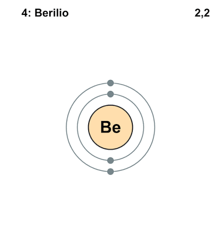
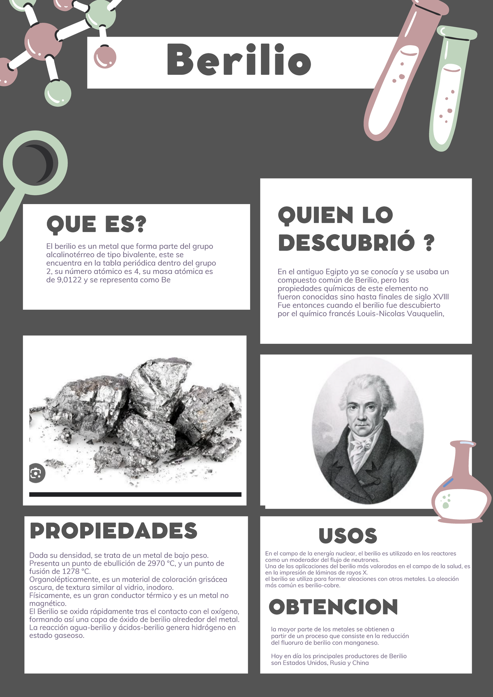

BERILIO
PANTALLA PRNCIPAL
El simbolo Be en la tabla periodica corresponde al berilio, un netal alcalinoterro.
Propiedades principales
- Numero atomico: 4
- Masa atomica: 9.012 u
- Grupo: 2
- Periodo: 2
- Bloque: s
Caracteristicas y usos
- Apariencia : Solido de color blanco grisaseo
- Propiedades: Es ligero, duro y quebradizo, con un punto de fusion alto.
- Se usa en aleaciones para fabricar herramientas que no producen chispas.


PANTALLA PRNCIPAL